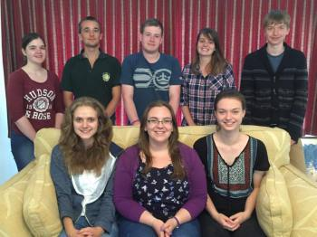

Peals and Quarters
2014/15
Sunday, 12 July 2015
1344 Plain Bob Major
Yorktown, Surrey St Michael in 48m (13–3–9 in F)
- Lydia Mayfield
- Claire L Pearson
- Claire Reading
- Lucy Williamson
- Charlotte Alford
- Ryan Mills
- Nathan Cox
- Matthew S Pearson (C)
FRung to mark the imminent departure of the fabulous Charlotte Alford and to celebrate the end of the YCG Surrey Weekend (with much thanks to the Pearson family for their hospitality).
Clockwise from front right; Claire Pearson, Lucy Williamson, Claire Reading, Lydia Mayfield, Ryan Mills, Nathan Cox, Charlotte Alford and Matthew Pearson (honourary member of YCG) :)
Saturday, 11 July 2015
1260 Plain Bob Major
Pirbright, Surrey
St Michael
Saturday, 11 July 2015 (11–2–19 in G)
- Charlotte Alford (C)
- Lydia Mayfield
- Claire Pearson (C)
- Lucy Williamson (C)
- Claire Reading (C)
- Ryan Mills (C)
Rung to celebrate the Confirmation of Matthew Pearson on Tuesday 7th July and for the glorious arrival of the lovley Charlotte Alford.
First participation in the conducting of a Quarter Peal - 3, 4, 5.
First as joint conductor - 6..
Ey Up it's the band: Claire Reading, Claire Pearson, Lucy Williamson, Charlotte Alford, Lydia Mayfield and Ryan Mills.